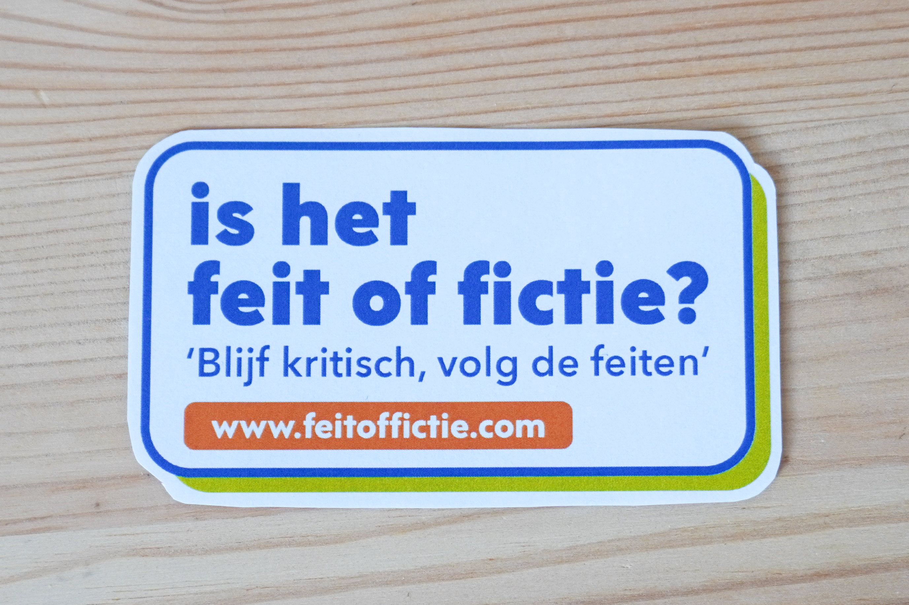

Blijf kritisch, volg de feiten
Niet iedereen die je volgt deelt de feiten, blijf kritisch binnen fictie van Facebook.
Herken complottheorieën/fictie:
- 1. De informatie was geheim
- 2. Er is spraken van een samenzwering
- 3. Het is ten nadele van een groep mensen
- 4. Er zitten kwaadaardige bedoelingen achter
Informatie
We leven in een tijd waarin het leven onrustig is en online niks meer te vertrouwen is. Wat is feit en wat is fictie. Wie kan je vertrouwen om de waarheid nog te zeggen. In de digitale wereld kom je niet voorbij algoritmes en filterbubbels, maar je kan jezelf er wel tegen beschermen. Wees niet naïef en informeer jezelf over alles wat met nep nieuws en complotten te maken heeft.
Voor meer informatie over complottheorieën ga naar:
Web-extensie
De feit of fictie web-extensie zorgt ervoor dat je met alle rust gebruik kan maken van Facebook. Je hoeft niet bang te zijn dat je misleid wordt door en verdraaid wereldbeeld dat iemand heeft, je hoeft niet op je hoede te blijven bij het kijken van katten filmpjes. Nee je kijk met gemaakt je Facebook pagina’s en content. En als er een account of groep is wat complotten of duidelijke onwaarheden verspreid zal de web-extensie je een melding geven dat je extra kritisch moet zijn op de inhoud die je gaat zien of lezen.
Gebruik Facebook zonder zorgen en word gewaarschuwd voor gevaarlijke en misleidende groepen en mensen.
Wat doet het?
De feit of fictie web-extensie zorgt ervoor dat je met alle rust gebruik kan maken van Facebook. Je hoeft niet bang te zijn dat je misleid wordt door en verdraaid wereldbeeld dat iemand heeft, je hoeft niet op je hoede te blijven bij het kijken van katten filmpjes. Nee je kijk met gemaakt je Facebook pagina’s en content. En als er een account of groep is wat complotten of duidelijke onwaarheden verspreid zal de web-extensie je een melding geven dat je extra kritisch moet zijn op de inhoud die je gaat zien of lezen.
Hoe werkt het?
De web extensie, scanned de woorden op je scherm. Het leest ze niet en het slaat uiteraard niks op. De extensie werkt op opvallen op de achtergrond en wordt alleen geactiveerd als die een van de woorden op de woordenlijst herkent. Dan komt de melding in beeld en wordt u gewaarschuwd. U kunt er zelf voor kiezen op de melding weg te klikken of om door verwezen te worden naar de feit of fictie website waar u nogmaals kan lezen waar u op moet letten. De melding gaat weer uit beeld als u hem sluit of weer op een pagina gaat waar er geen woorden van de lijst op staan.
Installeren
1.
Klik op de ‘Download’ knop en ga naar de downloads en op het .zip bestand.
2.
Ga aar chrome://extensions/ . Klik op ‘uitgepakte extensie laden’ en selecteer het mapje van de extensie.
3.
Zet ontwikkelaars modus aan.
4.
Dat was het gebruik nu gerust Facebook zonder stress, en weet wanneer de melding in beeld komt dat je even extra kritisch moet kijken.
Melding maken
Heb je account/groepen gevonden die een gevaarlijk wereldbeeld en misleidende informatie verspreiden, meld het account hier. Na genoeg meldingen zijn en gecontroleerd wordt of het klopt, komt deze groep/account in os systeem, en zullen gebruikers gewaarschuwd worden als ze de pagina belanden.
Gegeves formulier
Merchandise
Wil je deze campagne supporten, en het kritisch kijken delen met mensen om je heen.
Stickers


Mok


Telefoon hoesje